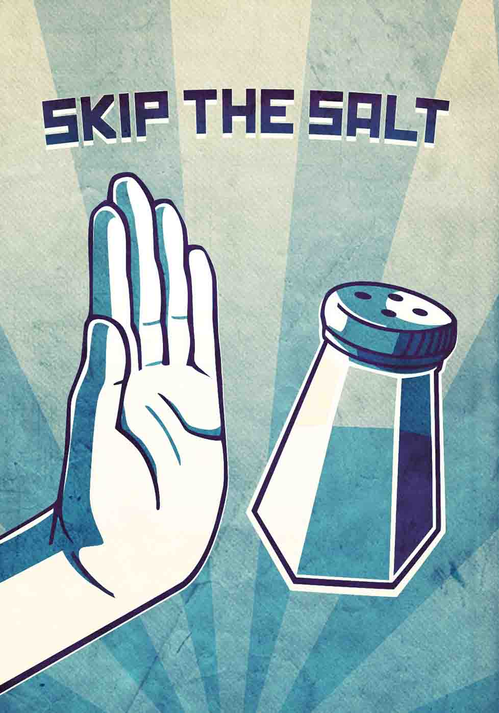

When you consume more salt than your body needs, sodium builds up in your blood. This causes your body to hold water, increasing your blood volume and pressure. Chronic high blood pressure can lead to heart disease, stroke, kidney disease, and congestive heart failure.
The recommended limit for sodium is less than 2,300 mg/day and 1,500 mg/day if you are over age 51. Certain genetically based characteristics can make some people especially sensitive to sodium, as well.
One teaspoon of table salt contains 2,325 mg of sodium! To avoid hidden salt in your diet, try these tips: Buy fresh ingredients without added salt. Avoid canned, frozen, and other processed foods. Avoid spice blends, dressings, and sauces with added salt. Look for "low sodium" or "no salt added" products. Learn to read nutrition information labels on packaged foods.
